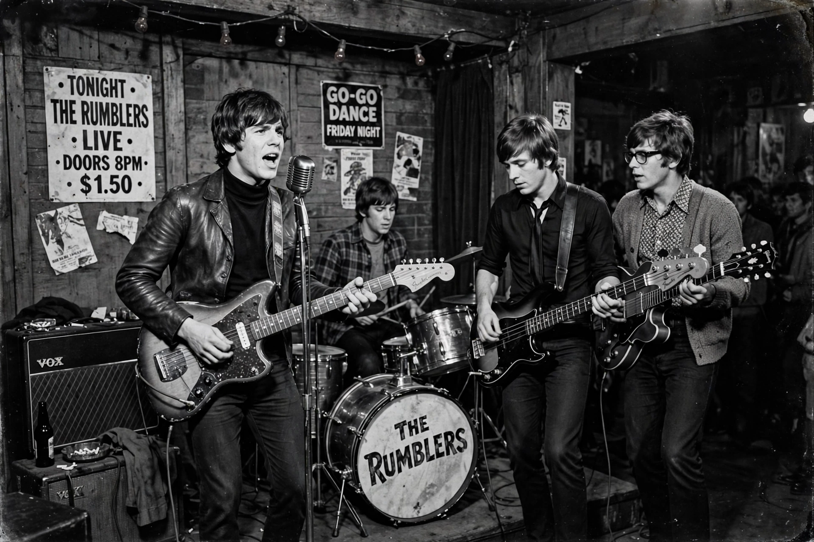

| Proto-punk | |
|---|---|
| Stylistic origins | Garage rock, rock and roll, R&B, glam rock |
| Cultural origins | Mid-1960s to mid-1970s, United States and United Kingdom |
| Derivative forms | Punk rock, new wave, post-punk |
| Key acts | The Stooges, MC5, The Velvet Underground, New York Dolls |
Proto-punk is a retrospective label applied to the body of rock music, chiefly from the mid-1960s to the mid-1970s, that anticipated the sound, attitude, and aesthetic of punk rock. The term was not in use while the music was being made; critics and historians applied it after punk's emergence in the late 1970s to describe its forerunners.
Proto-punk acts typically favoured raw, stripped-down instrumentation, aggressive or confrontational lyrics, and an amateurish, do-it-yourself energy that stood in contrast to the increasingly polished and progressive mainstream rock of the era. Many drew on 1950s rock and roll and rhythm and blues, played louder, faster, and with deliberate primitivism.
The American garage rock boom of the mid-1960s, documented on the 1972 compilation Nuggets, is usually treated as the starting point. Bands such as The Sonics and The Seeds played simple, aggressive rock with fuzzy guitars and sneering vocals. By the end of the decade, Detroit acts MC5 and The Stooges pushed the sound toward greater violence and noise, while The Velvet Underground in New York married avant-garde drone and taboo subject matter to rock song forms. In the early 1970s the New York Dolls combined garage rawness with glam theatrics, and groups such as The Modern Lovers and the Patti Smith Group carried the sensibility directly into the New York punk scene centred on CBGB.
Proto-punk provided punk rock with both a repertoire of techniques — three-chord economy, shouted vocals, brevity — and a mythology of neglected innovators. The label has since been applied broadly, sometimes anachronistically, to artists as varied as Captain Beefheart, The Kinks, and The Who's early singles.